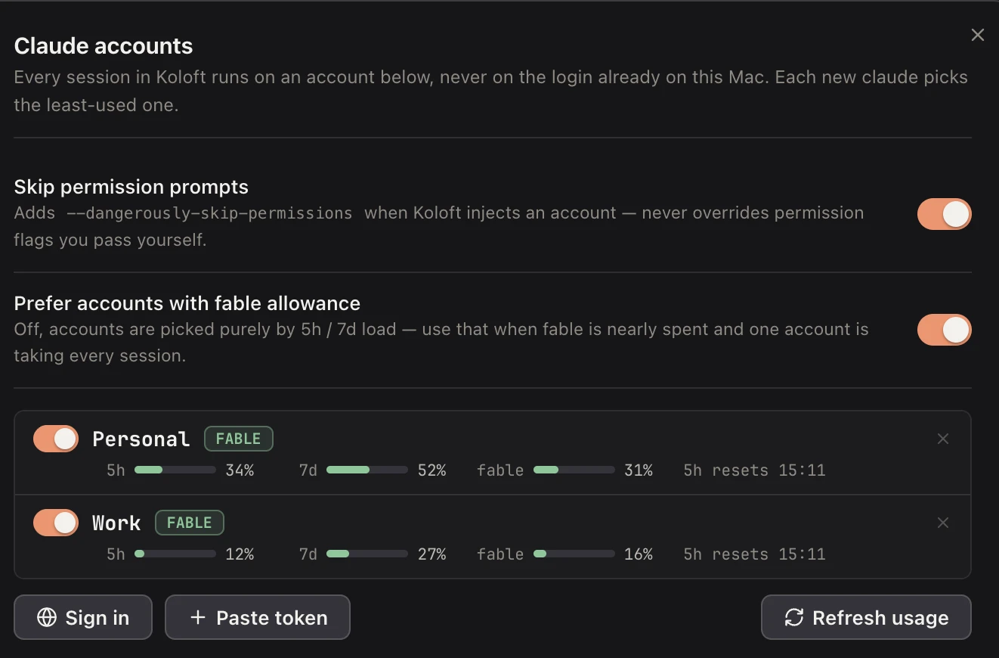

Several accounts, one pool
When several agents work at once, one subscription runs out fast. Then you stop, log out, log in to another one, and start again. Koloft keeps your accounts in one pool, and each new session starts on the one with the most room left.
Every session in Koloft runs on a Claude or Codex account you add here, never on the login this Mac already has. So the first time Koloft opens, it asks you to sign in to Claude or Codex (the welcome step "Sign in, and pick your Assist"). A Koloft you updated asks too, if no account was added yet.

Claude
Add your subscription accounts in Settings ▸ Accounts. Sign in runs the official
claude setup-token for you in the background. You approve once in your
browser, and the token goes straight into the pool. Or paste a token you already have.
You can also add an API (application programming interface) key, or a custom endpoint: another server that speaks the same API. Koloft cannot read how much is left on those, so it uses them only when every subscription is out and none comes back within 30 minutes, or when you have none.
a new Claude session starts
|
v
any subscriptions? -- no ----+
| yes |
v |
any with room now, or |
back in 30 minutes? -- no ---+
| yes |
v v
the one with API key or
the most room custom endpoint
How it picks
- Koloft asks each account how much is left as a session starts (a reading from the last 30 seconds is reused), every 5 minutes while it is open, and when you click Refresh usage
- with "Prefer accounts with fable allowance" on, an account that still has fable allowance wins first (fable is Claude's biggest model; some plans give it its own weekly budget)
- Claude sessions you open one after another spread over your accounts, instead of piling onto one (Codex sessions do not spread this way)
- if no account can be read, Koloft picks the next one in order
- a session that starts again (you click its row, restart it, or quit and reopen Koloft) stays on the account it ran on, Claude and Codex alike. It moves to another account only when one of that account's limits (5 hours, 7 days) is past 95%, or that account is being told to wait (rate-limited). An API key or custom endpoint is not kept this way.
Good to know
- tokens and keys are kept in the macOS Keychain
-
the little bars at the bottom of the sidebar show how much room your accounts have left,
Claude and Codex. Hover them for the
Account usagepanel: a Claude part and a Codex part, each with its accounts and, from two accounts up, a Pool row -
with no account that can be used, the New session button is greyed out, and a line under
it says why (the same for Codex); a scheduled job does not start either. The line is one
of:
-
No Claude account yet — add one in Settings ▸ Accounts.when none is added -
No Claude account can be used — check Settings ▸ Accounts.when none of yours can be used -
"<account name>" is not signed in — sign in again in Settings ▸ Accounts.when one needs a fresh sign-in
-
Codex
Sign in to Codex runs codex login in a terminal tab. Each sign-in becomes its
own Codex home, a folder that holds that one login. The sign-in tab says
Codex sign in: <name> above the terminal, with a Cancel button. New
Codex sessions start on the least-used one, and never on one Codex says has hit its limit.
Each account's use, for each limit Codex reports (such as 5 hours and a week), shows in
Settings and in the usage panel at the bottom of the sidebar, with its credits and the
limit resets it has saved, like
62,500 credits · 3 resets saved, first expires 10-21.
An account that hit its limit shows WALLED in the panel. When it has a saved
reset, a Use a reset button is there too: say yes, and Koloft spends one
reset and reads the account's limits again.
Assist
Assist is Koloft's own AI. One of your accounts runs it. It does small jobs for Koloft, and you can talk to it. Settings ▸ Assist is where you turn it on or off and pick the tool it runs on, Claude or Codex. That one pick counts for the small jobs and for every Assist you talk to.
The small jobs:
-
the short title of a Claude session that an agent starts with
koloft session new(see agents) - which docs the folded Workbench card lists
- which folder a session you ask for in ⌘P should start in (see find any session)
Talking to it:
- the Assist block in the sidebar, under the sessions list. It is always there, Discord or not. Global comes first; it looks after every folder. Then each folder's Assist you have talked to or bound to Discord (right-click the folder ▸ Talk to Assist). Then the tasks Assist is running for you, such as setting up Discord. With Assist off and nothing bound to Discord, it shows one grey Assist row; click it to set Assist up.
- from your phone, once an Assist has a Discord channel (see discord)
- from ⌘P (see find any session)
Assist only passes work on and never changes your files itself (see what Assist can do).
- on Claude it uses Haiku, on Codex GPT-6 Luna, for the small jobs; each costs a tiny bit of that account's plan or API balance, far less than one cent
- with Assist off, the small jobs run without AI: a session an agent starts is named after the first line of its task, the card lists every doc the agent wrote, and ⌘P opens the folder picker. An Assist on Discord keeps working either way.
Git accounts
A session that pushes needs a git login too. Settings ▸ Accounts ▸ Git accounts lets you
add accounts for GitHub, GitHub Enterprise, GitLab, Bitbucket, Azure DevOps, Gitea /
Forgejo / Codeberg, or any other git server, and
pick one per repository. Every Claude Code and Codex session in a
folder with a pick pushes and fetches as that account; on GitHub and GitHub Enterprise,
gh (GitHub's command-line tool) runs as it too. Koloft never touches your own
git and gh setup: a folder with no pick, and every session in it, keeps using it.
Adding one
Click Add account and pick the host:
-
GitHub and GitHub Enterprise: Koloft shows a one-time code and opens the server's
sign-in page in your own browser (so Google, Apple or company sign-in work as they do
there). Type the code, approve, and the account shows up. Koloft runs the sign-in of the
ghthat comes with Koloft; there is no terminal tab. Or paste a token. - GitLab.com, Bitbucket, Gitea / Forgejo / Codeberg: sign in on the site in your browser; it sends you back to Koloft when you are done
-
your own GitLab, Azure DevOps, and a GitHub Enterprise whose address has a port number:
paste a token.
Create a tokenopens that server's token page and names the boxes to tick. Koloft checks the token and reads your username from it; on GitLab and GitHub Enterprise, a token that lacks a permission is turned down, and the message names the missing one - Other server: its address, your username there and a token, kept without checking
Each account is kept on this Mac only, in the Keychain like your other tokens. Its row
says how many folders use it; their names show when you click Remove.
Make default makes it the first choice when a folder on that host picks one;
Remove takes it off this Mac, and its folders go back to your own setup. When
the server turns its token down, the row says NEEDS SIGN-IN AGAIN.
Picking one per folder
Hover a folder's branch sign: its git panel has an
Account part. Pick an account there, change it, or go back to your own setup.
- under it, the panel says what name and email your commits get. On GitHub.com, GitLab, Gitea and Bitbucket that is the account's own name and the email its server reports (a no-reply address on GitHub.com and Gitea); on GitHub Enterprise, Azure DevOps and other servers commits keep your own name and email
- when you add a folder, Koloft picks an account for it by itself in two cases: the folder's address or git setup names an account Koloft has, and that account can push there; or only one of your accounts (or your default) can push there
-
a folder already in the list only gets a suggestion, such as
The repository address names bob — use bob?with a Use bob button, orThis repository was used with alice, who is not in Koloft yet. Add alice?with an Add alice button. Click Not now and it does not ask again -
gh auth loginin a session in a picked GitHub folder says to manage the account in Koloft instead - a Codex session's sandbox (the box Codex works in) may reach the network in a picked folder, so it can push there. In another folder a session you start stays offline unless Settings ▸ Extensions ▸ "Let agents drive this Browser" is on (see agents)
- a remote folder has no Account part: its sessions use that machine's own git setup
A folder whose remote is an SSH address
A pick works when the folder's remote is an SSH address too (git@github.com:…, ssh://…, or an ssh alias of your own). Inside a Koloft
session, git then goes over https with the picked account's token; your own git setup,
~/.ssh and the Keychain are left alone. An account added as Other server does
not do this.
Some GitLab and Gitea servers allow SSH only. Then the git panel says
This server allows SSH only — bob has no SSH key on this Mac yet. with a
Make a key for bob button. Koloft makes a key for that account, shows it with
Copy key and Open SSH keys page, and Check again
tells you whether the server knows it yet. Pushes and fetches in that folder then use that
key.
Your own accounts
The pool is for your own accounts. Please check that the way you use them fits Anthropic's and OpenAI's terms. That is between you and them.
next page -> Remote folders